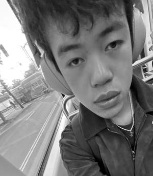

CS180 · Intro to Computer Vision and Computational Photography

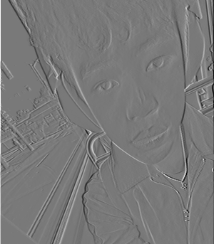
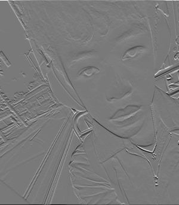
Convolving this 300×343 portrait with a 9×9 box filter, the four-loop version took 4.23 s, the two-loop version took 0.48 s, and scipy.signal.convolve2d took 0.011 s.
I use zero padding with the “same” option to keep everything the same size. convolve2d fills with zeros by default too, so the outputs match.
def conv2d_4loops(arr, kernel):
tkernel = np.flip(kernel).copy()
out = np.zeros(arr.shape)
x_pad = (tkernel.shape[0] - 1) // 2
y_pad = (tkernel.shape[1] - 1) // 2
arr_temp = np.zeros((arr.shape[0] + 2 * x_pad, arr.shape[1] + 2 * y_pad))
arr_temp[x_pad:arr.shape[0] + x_pad, y_pad:arr.shape[1] + y_pad] = arr
for i in range(arr.shape[0]):
for j in range(arr.shape[1]):
for kx in range(tkernel.shape[0]):
for ky in range(tkernel.shape[1]):
out[i][j] += arr_temp[i + kx,j + ky] * tkernel[kx, ky]
return out
def conv2d_2loops(arr, kernel):
tkernel = np.flip(kernel).copy()
out = np.zeros(arr.shape)
x_pad = (tkernel.shape[0] - 1) // 2
y_pad = (tkernel.shape[1] - 1) // 2
arr_temp = np.zeros((arr.shape[0] + 2 * x_pad, arr.shape[1] + 2 * y_pad))
arr_temp[x_pad:arr.shape[0] + x_pad, y_pad:arr.shape[1] + y_pad] = arr
for i in range(arr.shape[0]):
for j in range(arr.shape[1]):
out[i][j] += np.sum(tkernel * arr_temp[i : i + kernel.shape[0], j : j + kernel.shape[1]])
return out
def png2arr(path):
img = Image.open(path).convert('L')
out = np.array(img, dtype=np.float64)
return out
kernel_xy = np.array([[-2, -1, 0], [-1, 0, 1], [0, 1, 2]])
kernel_x = np.array([[1, 0, -1]])
kernel_y = np.array([[1], [0], [-1]])
box_kernel = np.ones((9,9)) / 81
cat = png2arr(r'project2\cat.png')
start_time = time.perf_counter()
out4 = conv2d_4loops(cat, box_kernel)
end_time = time.perf_counter()
execution_time = end_time - start_time
print(f"4 Loop: {execution_time} ms")
start_time = time.perf_counter()
out2 = conv2d_2loops(cat, box_kernel)
end_time = time.perf_counter()
execution_time = end_time - start_time
print(f"2 Loop: {execution_time} ms")
start_time = time.perf_counter()
outsp = convolve2d(cat, box_kernel, mode='same')
end_time = time.perf_counter()
execution_time = end_time - start_time
print(f"scipy : {execution_time} ms")
print(np.allclose(out4, outsp))
print(np.allclose(out4, out2))
print(np.allclose(out2, outsp))
#4 Loop: 3.651648400002159 ms
#2 Loop: 0.5036876999947708 ms
#scipy : 0.022186099988175556 ms
plt.imsave('project2/1p1/out2_box.png', out2, cmap='gray')
plt.imsave('project2/1p1/out4_box.png', out4, cmap='gray')
plt.imsave('project2/1p1/outsp_box.png', outsp, cmap='gray')
plt.imsave('project2/1p1/out2_kx.png', conv2d_2loops(cat, kernel_x), cmap='gray')
plt.imsave('project2/1p1/out2_ky.png', conv2d_2loops(cat, kernel_y), cmap='gray')
fig, axes = plt.subplots(1, 4, figsize=(16,4))
images = [cat, out4, out2, outsp]
for i, ax in enumerate(axes):
ax.imshow(images[i], cmap="gray")
ax.axis('off')
plt.tight_layout()
fig.savefig("project2/1p1/norm.png")
plt.show()
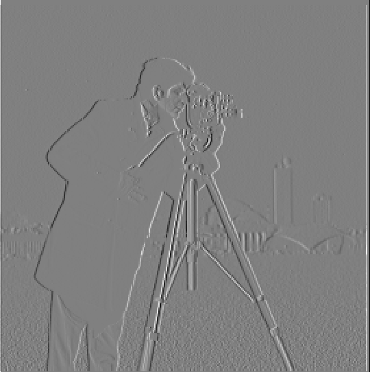
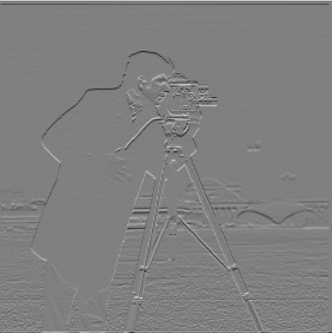
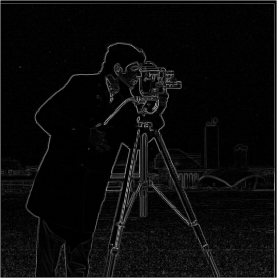
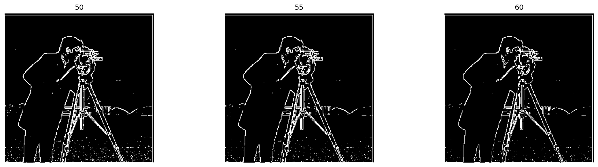
I chose a threshold of 55. It removes a lot of the noise from the grass while still keeping most of the lines in the background. Lowering the threshold keeps a lot of the grass noise, and raising it removes more of the background lines than it removes grass.
def png2arr(path):
img = Image.open(path).convert('L')
out = np.array(img, dtype=np.float64)
return out
man = png2arr(r'project2\cameraman.png')
kernel_x = np.array([[1, 0, -1]])
kernel_y = np.array([[1], [0], [-1]])
pd_x = convolve2d(man, kernel_x, mode='same')
pd_y = convolve2d(man, kernel_y, mode='same')
gmi = np.sqrt(pd_x ** 2 + pd_y ** 2)
def binthresh(threshold):
return gmi > threshold
plt.imsave('project2/1p2/pd_x.png', pd_x, cmap='gray')
plt.imsave('project2/1p2/pd_y.png', pd_y, cmap='gray')
plt.imsave('project2/1p2/gmi.png', gmi, cmap='gray')
fig, axes = plt.subplots(1, 3, figsize=(16,4))
images = [binthresh(50), binthresh(55), binthresh(60)]
titles = [50, 55, 60]
for i, ax in enumerate(axes):
ax.imshow(images[i], cmap="gray")
ax.set_title(titles[i])
ax.axis('off')
plt.tight_layout()
fig.savefig('project2/1p2/bins.png', dpi=150, bbox_inches='tight')
plt.show()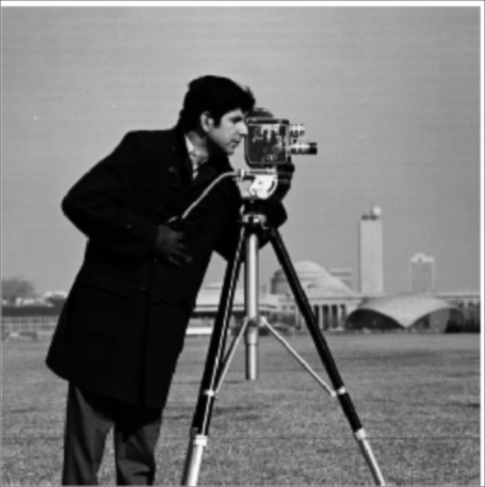
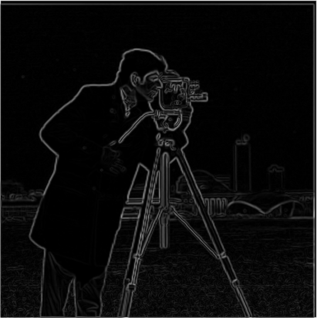
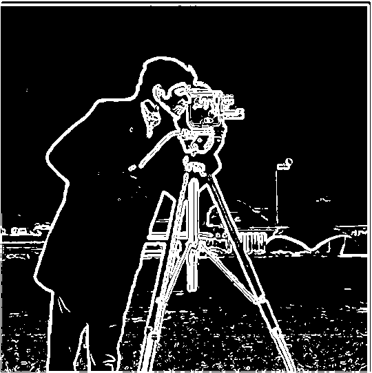
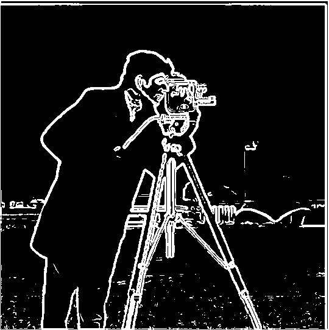
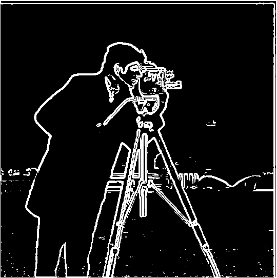
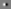
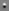
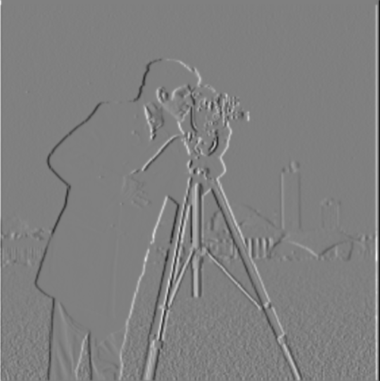
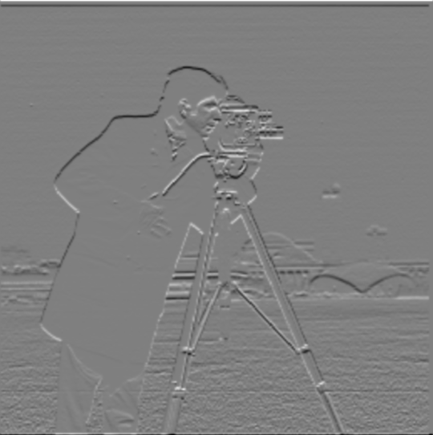
Compared to the finite difference result, the blurred version has much less noise from the grass, and the edges are thicker and smoother. The gradient magnitudes are also smaller, so the threshold dropped from 55 to 30. I picked 30 because it gets rid of all of the grass but keeps most of the edges of the buildings.
The two results match everywhere except the edge pixels. Blurring zero-pads the image before the derivative, so the edge pixels are different.
def png2arr(path):
img = Image.open(path).convert('L')
out = np.array(img, dtype=np.float64)
return out
man = png2arr(r'project2\cameraman.png')
g1d = cv2.getGaussianKernel(9, 1)
gl2 = g1d @ g1d.T
pd_g = convolve2d(man, gl2, mode='same')
kernel_x = np.array([[1, 0, -1]])
kernel_y = np.array([[1], [0], [-1]])
pd_x = convolve2d(pd_g, kernel_x, mode='same')
pd_y = convolve2d(pd_g, kernel_y, mode='same')
DoGx = convolve2d(gl2, kernel_x)
DoGy = convolve2d(gl2, kernel_y)
plt.imsave('project2/1p3/DoGx.png', DoGx, cmap='gray')
plt.imsave('project2/1p3/DoGy.png', DoGy, cmap='gray')
plt.imsave('project2/1p3/manxDoGx.png', convolve2d(man, DoGx, mode='same'), cmap='gray')
plt.imsave('project2/1p3/manxDoGy.png', convolve2d(man, DoGy, mode='same'), cmap='gray')
gmi = np.sqrt(pd_x ** 2 + pd_y ** 2)
print(np.allclose(pd_x, convolve2d(man, DoGx, mode='same')))
plt.imsave('project2/1p3/gmi.png', gmi, cmap='gray')
plt.imsave('project2/1p3/pd_g.png', pd_g, cmap='gray')
def binthresh(threshold):
return gmi > threshold
plt.imsave('project2/1p3/b20.png', binthresh(20), cmap='gray')
plt.imsave('project2/1p3/b25.png', binthresh(25), cmap='gray')
plt.imsave('project2/1p3/b30.png', binthresh(30), cmap='gray')
fig, axes = plt.subplots(1, 5, figsize=(16,4))
images = [pd_g, gmi, binthresh(20), binthresh(25), binthresh(30)]
for i, ax in enumerate(axes):
ax.imshow(images[i], cmap="gray")
ax.axis('off')
plt.tight_layout()
plt.show()Unsharp masking amplifies the high-frequency content of the image, which is where the edges are. Subtracting the Gaussian blur from the image leaves only the high frequencies, and adding that back makes the image look sharper. This can all be combined because it is linear.
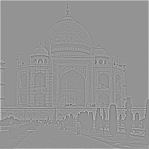
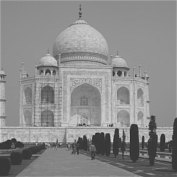

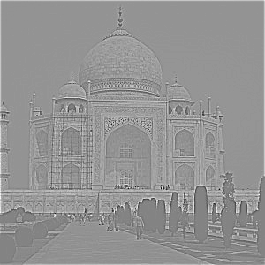
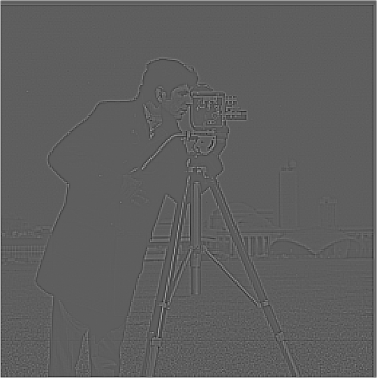
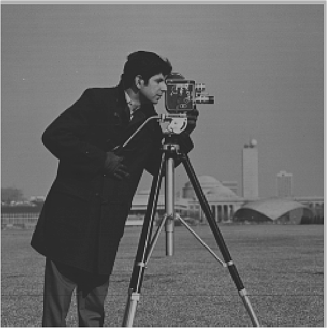

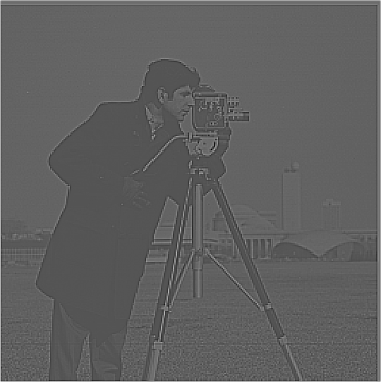
As α goes up, the high-frequency components are amplified more. At α between 1 and 2 the image looks sharper, but at 10 the high-frequency components are so overpowering that the low-frequency base is heavily attenuated and you can mostly only see the edges.
The re-sharpened image looks sharper than the blurred one, but it is not the same as the original, because it cannot restore the permanently lost detail.
def png2arr(path):
img = Image.open(path).convert('L')
out = np.array(img, dtype=np.float64)
return out
taj = png2arr(r'project2\taj.jpg')
g1d = cv2.getGaussianKernel(9, 1)
gl2 = g1d @ g1d.T
pd_g = convolve2d(taj, gl2, mode='same')
sharp = taj - pd_g
plt.imsave('project2/2p1/blurred_pd_g.png', pd_g, cmap='gray')
plt.imsave('project2/2p1/sharp.png', sharp, cmap='gray')
sharpened = taj + sharp
plt.imsave('project2/2p1/sharpened.png', sharpened, cmap='gray')
def sharpfil(alpha):
delta = np.zeros(gl2.shape)
delta[gl2.shape[0]//2, gl2.shape[1]//2] = 1
return (1 + alpha) * delta - alpha * gl2
alpha0p5 = convolve2d(taj, sharpfil(0.5), mode='same')
alpha1 = convolve2d(taj, sharpfil(1), mode='same')
alpha2 = convolve2d(taj, sharpfil(2), mode='same')
alpha10 = convolve2d(taj, sharpfil(10), mode='same')
plt.imsave('project2/2p1/alpha0p5.png', alpha0p5, cmap='gray')
plt.imsave('project2/2p1/alpha1.png', alpha1, cmap='gray')
plt.imsave('project2/2p1/alpha2.png', alpha2, cmap='gray')
plt.imsave('project2/2p1/alpha10.png', alpha10, cmap='gray')
print(np.allclose(sharpened, alpha1))
fig, axes = plt.subplots(1, 2, figsize=(16,4))
images = [taj, sharpened]
for i, ax in enumerate(axes):
ax.imshow(images[i], cmap="gray")
ax.axis('off')
plt.tight_layout()
plt.show()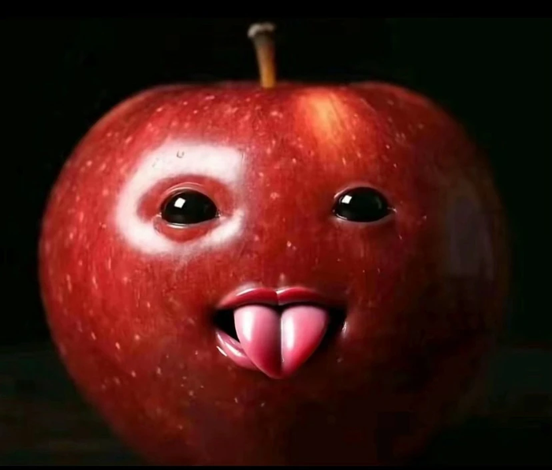
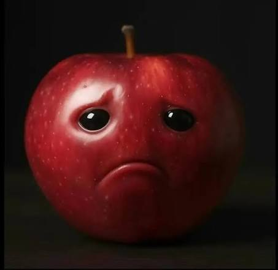
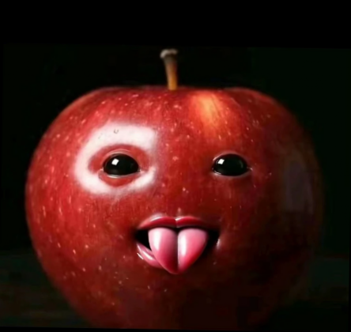
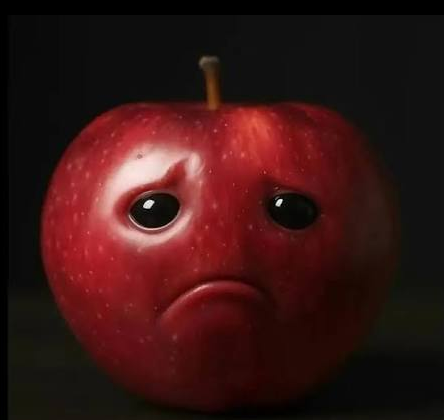
Log magnitude of the Fourier transform
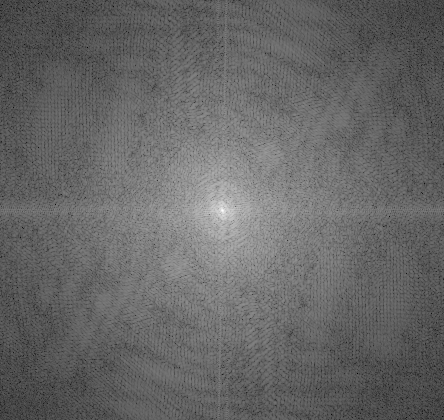
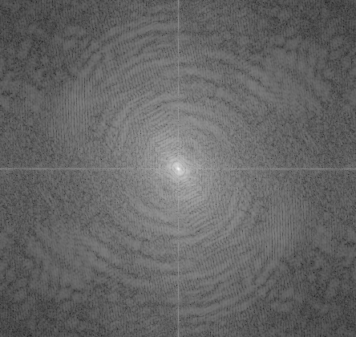
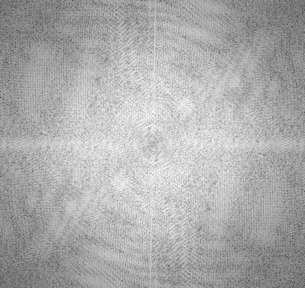
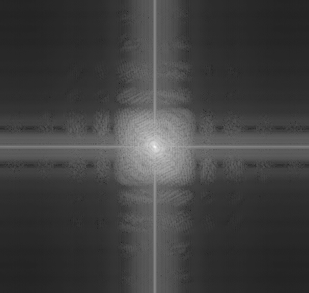
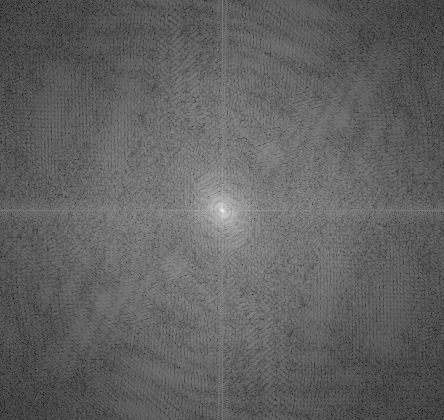
Filtered images
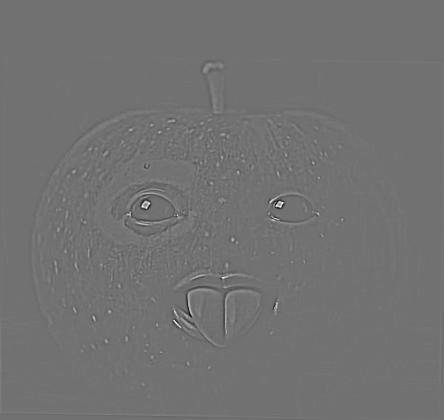
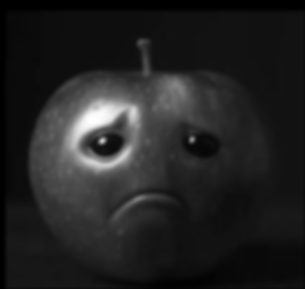
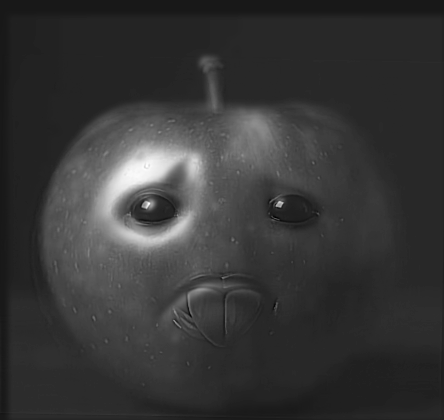
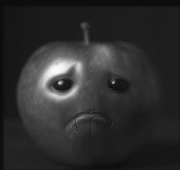
σ1 = 1.5 for the high-pass and σ2 = 3 for the low-pass.
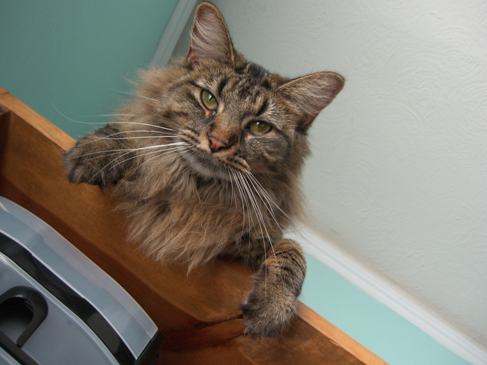
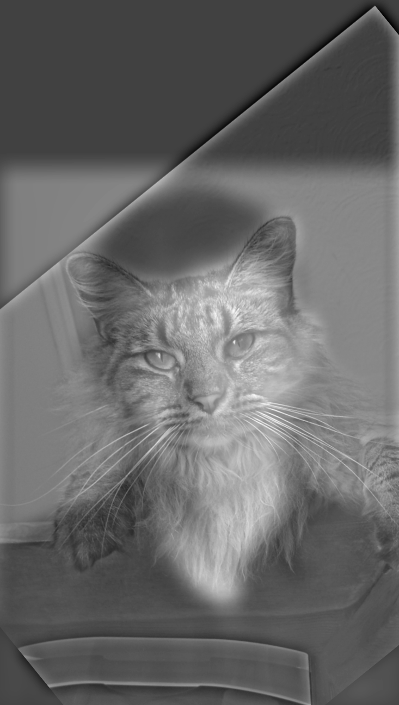
σ1 = 15 for Nutmeg (high-pass) and σ2 = 20 for Derek (low-pass).
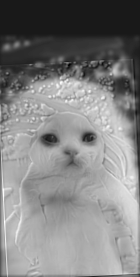
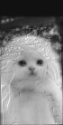
σ1 = 1.5 for the wet cat (high-pass) and σ2 = 3 for the dry cat (low-pass).
Derek and Nutmeg had to use high sigmas because the images were larger, but I chose the sigmas by making sure the high-pass image overpowered the low-pass one when looking from up close, and that the low-pass image overpowered it when I shrank the image and looked from far away. From far away, the low-pass image is the only thing I can see, and the high-pass image disappears. Up close it is the opposite, though the shadow of the low-pass image is still mostly apparent.
def hybrid_image(im1, im2, sigma1, sigma2):
im1g = cv2.cvtColor(im1.astype(np.float32), cv2.COLOR_RGB2GRAY)
im2g = cv2.cvtColor(im2.astype(np.float32), cv2.COLOR_RGB2GRAY)
g1d_l = cv2.getGaussianKernel(int(3*sigma2 + 1), sigma2)
img2_tmp = convolve2d(im2g, g1d_l, mode='same')
im2_lpf = convolve2d(img2_tmp, g1d_l.T, mode='same')
g1d_h = cv2.getGaussianKernel(int(3*sigma1 + 1), sigma1)
im1_hpfl_tmp = convolve2d(im1g, g1d_h, mode='same')
im1_hpfl = convolve2d(im1_hpfl_tmp, g1d_h.T, mode='same')
im1_hpf = im1g - im1_hpfl
out = 0.5 * im1_hpf + 0.5 * im2_lpf
out = (out - out.min()) / (out.max() - out.min())
ft = lambda x: np.log(np.abs(np.fft.fftshift(np.fft.fft2(x))) + 1e-8)
plt.imsave('project2/2p2/ft_im1.png', ft(im1g), cmap='gray')
plt.imsave('project2/2p2/ft_im2.png', ft(im2g), cmap='gray')
plt.imsave('project2/2p2/ft_im1_hpf.png', ft(im1_hpf), cmap='gray')
plt.imsave('project2/2p2/ft_im2_lpf.png', ft(im2_lpf), cmap='gray')
plt.imsave('project2/2p2/ft_hybrid.png', ft(out), cmap='gray')
return out
#sigma1 is blur u subtract, sigma2 is blur u add
sigma1 = 15
sigma2 = 20
hybrid = hybrid_image(im1_aligned, im2_aligned, sigma1, sigma2)
plt.imsave('project2/2p2/derekcat.png', hybrid, cmap='gray')
small = cv2.resize(hybrid, None, fx=0.5, fy=0.5, interpolation=cv2.INTER_AREA)
plt.imsave('project2/2p2/derekkcat_small.png', small, cmap='gray')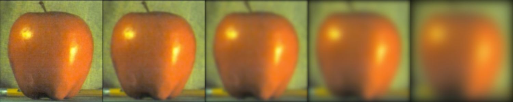
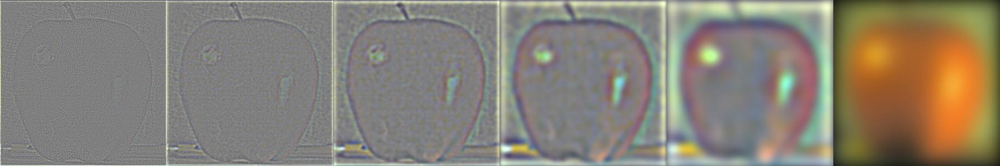
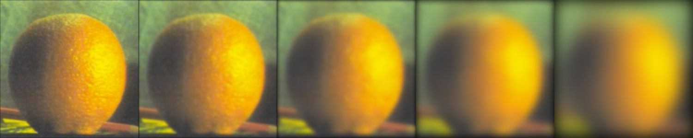
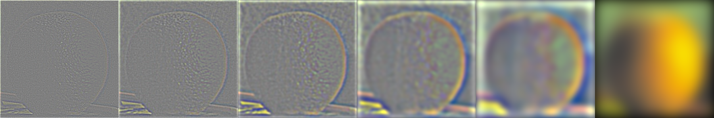
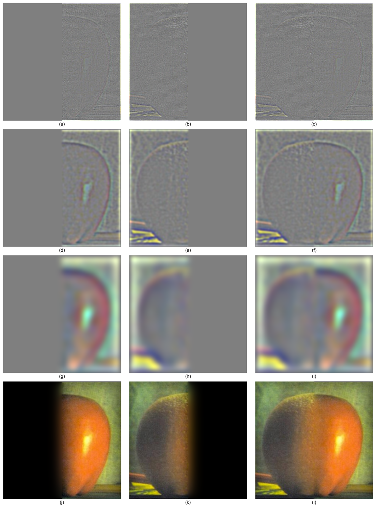
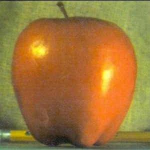
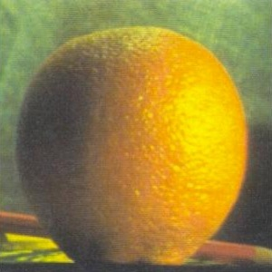
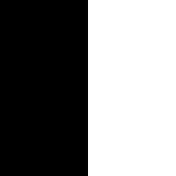
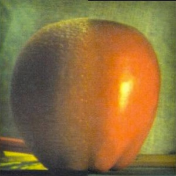
I picked the oraple because I like oranges and apples, and it came with the project.
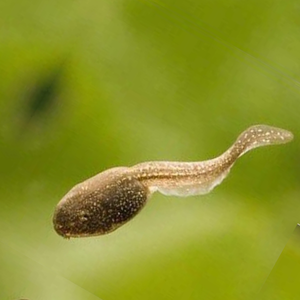
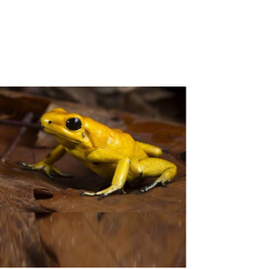
I picked the frog and the tadpole because frogs come from tadpoles. One obstacle was that the background of the frog image did not fully cover the space, and the leg of the frog also peeked through when it should not have.
I picked the snake and the worm because they are both long critters. What did work was the mending, and it looked pretty smooth. It would look better if the images were better aligned and the seam connecting the two were not so straight.
def app_gauss(img, sigma):
g1d = cv2.getGaussianKernel(int(6*sigma + 1), sigma)
img_tmp = convolve2d(img, g1d, mode='same')
out = convolve2d(img_tmp, g1d.T, mode='same')
return out
def gaussian_stack(img, spline, levels):
gstack_out = []
lstack_out = []
spline_out = []
for level in range(-1, levels):
if(level != -1):
spline_out.append(app_gauss(spline, 2 ** level))
gstack_out.append(app_gauss(img, 2 ** level))
lstack_out.append(gstack_out[len(gstack_out) - 2] - gstack_out[len(gstack_out) - 1])
else:
gstack_out.append(img)
spline_out.append(spline)
lstack_out.append(gstack_out[-1])
return lstack_out, spline_out, gstack_out
def blend(im1, im2, mask, levels):
mask1 = mask
mask2 = np.ones(mask.shape) - mask
out1 = gaussian_stack(im1, mask1, levels)
out2 = gaussian_stack(im2, mask2, levels)
blend1 = []
blend2 = []
final = np.zeros(im1.shape)
for level in range(levels + 1):
im1_l = out1[0][level] * out1[1][level]
im2_l = out2[0][level] * out2[1][level]
blend1.append(im1_l)
blend2.append(im2_l)
final += (im1_l + im2_l)
return final, blend1, blend2
#mask = np.zeros(im1.shape[:2])
#mask[:, im1.shape[1] // 2:] = 1
mask = plt.imread('project2/mask_frog_tadpole.png')[:, :, 0]
channels = [blend(im1[:, :, c], im2[:, :, c], mask, 5) for c in range(3)]
outf = np.dstack([c[0] for c in channels])
b1 = [np.dstack([c[1][k] for c in channels]) for k in range(len(channels[0][1]))]
b2 = [np.dstack([c[2][k] for c in channels]) for k in range(len(channels[0][2]))]
b3 = [x + y for x, y in zip(b1, b2)]
def show_lstack(img):
return np.clip(img * 3 + 0.5, 0, 1)
rows = []
for l in [0, 2, 4]:
rows.append([show_lstack(b1[l]), show_lstack(b2[l]), show_lstack(b3[l])])
im1_t = sum(b1)
im2_t = sum(b2)
rows.append([np.clip(im1_t, 0, 1), np.clip(im2_t, 0, 1), np.clip(outf, 0, 1)])
fig, axes = plt.subplots(len(rows), 3, figsize=(12, 16), constrained_layout=True)
letters = "abcdefghijklmnopqrstuv"
for r in range(len(rows)):
for c in range(3):
ax = axes[r,c]
ax.imshow(rows[r][c])
ax.set_xticks([])
ax.set_yticks([])
for s in ax.spines.values():
s.set_visible(False)
ax.set_xlabel(f'({letters[r*3 + c]})')
fig.savefig('project2/2p4/frog_tp_stacks.png', dpi=150, bbox_inches='tight')
plt.imsave('project2/2p4/frog_tp.png', np.clip(outf, 0, 1), cmap='gray')
plt.show()The most important thing I learned from this project is that we perceive high-frequency data up close and low-frequency data from afar.